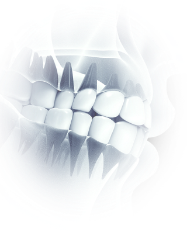
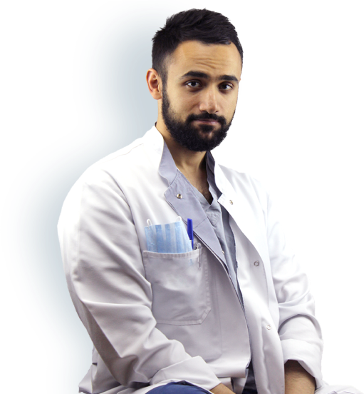

<section class="about">
    <div class="container">
        <div class="about__inner">
            <div class="about__left">
                <h2 class="about__heading h2">
                    Обо мне
                </h2>

                <div class="about__decoration">
                    <picture class="about__bg">
                        <source media="(min-width: 960px)" srcset="../../../img/about-bg-desktop.png">
                        
                    </picture>

                    <svg class="about__logo icon" aria-hidden="true">
                        <use xlink:href="img/sprites/sprite.svg#logo"></use>
                    </svg>

                    <picture class="about__doctor">
                        <source media="(min-width: 960px)" srcset="../../../img/about-doctor-desktop.png">
                        
                    </picture>
                </div>
            </div>
            <ul class="about__info">
                <li>
                    <h3 class="about__title h3">
                        Меликов Эльвин Аббасалиевич
                    </h3>
                    <p class="about__description p p--sm">
                        Стаж по специальности Челюстно-лицевая хирургия – 7 лет<br>
                        Стаж по работе хирургическая стоматология – 10 лет.<br>
                        Стаж по работе зам. главного врача по вопросам организации и продвижения
                        стоматологических услуг в стоматологической клиники «Дентомед» с 2018 года по 2020г.<br>
                        Автор и патентообладатель 2 изобретений в сфере медицины, зарегистрированных в реестре РФ.<br>
                        Изобретения изготавливаются известной компанией в сфере медицинских изделий - «КОНМЕТ»<br>
                        Изобретенный метод оперативного вмешательства используется при реабилитации пациентов
                        после онкологических операции на челюстях.<br>
                    </p>
                </li>
                <li>
                    <h3 class="about__title h3">
                        Специализация
                    </h3>
                    <ul class="about__list">
                        <li class="about__item">
                            Лечение гнойно-воспалительных процессов
                        </li>
                        <li class="about__item">
                            Челюстно-лицевая хирургия и костная пластика
                        </li>
                        <li class="about__item">
                            Удаление сложных зубов
                        </li>
                        <li class="about__item">
                            Импланталогия
                        </li>
                    </ul>
                </li>
                <li>
                    <h3 class="about__title h3">
                        Заболевания
                    </h3>
                    <ul class="about__list">
                        <li class="about__item">
                            Воспалительные заболевания челюстей
                        </li>
                        <li class="about__item">
                            Гиганто-клечтоная гранулема центральная
                        </li>
                        <li class="about__item">
                            Гипертрофия десны
                        </li>
                        <li class="about__item">
                            Корневая киста
                        </li>
                        <li class="about__item">
                            Альвелито
                        </li>
                    </ul>
                </li>
           </ul>
        </div>
    </div>
</section>